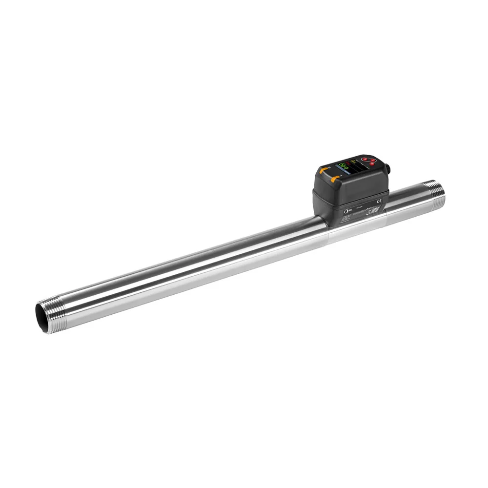

Datasheet (PDF)
en_5_11_600_M80_IOL_15TCC.pdf
Tải tài liệuM/80 Inline flow sensor, DN 25 connection

Mã M/80/IOL/25T/CC (M/80 Inline flow sensor, DN 25 connection) thuộc Flow Sensors series M/80, kèm khoảng 12 phụ kiện liên quan như đầu nối, cáp và đế lắp. Lắp đúng đoạn ống và phụ kiện giúp phép đo chính xác. Thông số: Medium: Compressed air | Gases | External Thread: R1 | Flow: 3750 l/min, 132.4 scfm | Operating Temperature: -10 ... 60 °C, 14 ... 140 °F | Country of Origin: Germany. Gửi cỡ ống và vị trí lắp để chúng tôi đề xuất phụ kiện và báo giá đồng bộ.
Các thông số phục vụ nhận diện ban đầu. Khi đặt hàng, vui lòng gửi yêu cầu để xác nhận lại cấu hình, chứng từ và điều kiện giao hàng.
Tài liệu hiển thị ở mức tham khảo để khách hàng kiểm tra nhanh. Với yêu cầu mua hàng, đội kỹ thuật sẽ xác nhận lại tài liệu phù hợp theo mã và cấu hình thực tế.
en_5_11_600_M80_IOL_15TCC.pdf
Tải tài liệuz10291BR_M80_Inline_Flow_Sensor_EN_0924_LR.pdf
Tải tài liệuOM_PS_M80_IOL_Inline_Flow_Sensor_EN.pdf
Tải tài liệuIODD_M-80-IOL-25T-CC_IO-Link-11.zip
Tải tài liệuDanh sách tham khảo giúp định hướng phụ kiện, cáp, fitting, coil, mountings hoặc mã tương tự. Khi báo giá, thông tin sẽ được kiểm tra lại theo cụm lắp thực tế.
Connector cable, 5 m, 5 pin, M12 x 1, 60 V AC/DC
Xem mã chínhConnector cable, 5 m, 5 pin, open end, M12 x 1, 60 V AC/DC
Xem mã chínhWireable plug, 3 pin, M8 x 1, 60 V DC
Xem mã chínhConnector cable, 2 m, 5 pin, M12 x 1, 60 V AC/DC
Xem mã chínhConnector cable, 1 m, 5 pin, M12 x 1, 60 V AC/DC
Xem mã chínhIO-Link master, PROFINET interface, x1 5 pin M12 plug, x11 5 pin M12 sockets
Xem mã chínhIO-Link I/O module, Standard, x1 4 pin M12 plugs, x8 4 pin M12 sockets
Xem mã chínhIO-Link master, EtherNet/IP interface, x1 5 pin M12 plug, x11 5 pin M12 sockets
Xem mã chínhIO-Link I/O module, Auxillary power, x2 4 pin M12 plugs, x8 4 pin M12 sockets
Xem mã chínhExcelon Plus Port Adaptors G1/2
Excelon Plus Quikclamp with Bracket Assembly
Excelon Plus Quikclamp
M/80/IOL/25T/CC thuộc nhóm Flow Sensors. Trang này dùng để đối chiếu mô tả, thông số kỹ thuật, tài liệu và phụ kiện liên quan trước khi gửi yêu cầu báo giá.
Bạn gửi part number công tắc/cảm biến áp suất; chúng tôi đối chiếu và cung cấp thông số chính như dải đo, kiểu tiếp điểm hoặc ngõ ra, ren cổng và vật liệu. Nếu mã có nhiều tài liệu, chúng tôi nêu rõ từng loại. Việc xác minh datasheet giúp bạn chọn đúng dải đo trước khi thay trên máy.
Bạn gửi part number cần tra; chúng tôi đối chiếu và cung cấp các thông số kỹ thuật chính cùng tài liệu liên quan đến mã đó. Nếu một mã có nhiều tài liệu (datasheet, hướng dẫn lắp, bản vẽ), chúng tôi nêu rõ từng loại. Việc này giúp bạn xác minh cấu hình trước khi đưa vào hồ sơ mua hoặc lắp đặt.
Bạn gửi part number thiết bị chính; chúng tôi đối chiếu thông tin phụ kiện và datasheet để liệt kê các mã liên quan như đế, đầu nối, cáp, coil hoặc bộ lọc. Danh sách này giúp bạn đặt đồng bộ, tránh thiếu khi lắp. Nếu cần, chúng tôi nhóm phụ kiện theo chức năng để bạn dễ chọn.
Được. Bạn gửi hai part number cần so sánh; chúng tôi đối chiếu các thông số chính từ datasheet như cổng, dải làm việc, điều khiển và phụ kiện liên quan, rồi nêu điểm khác biệt. Trên cơ sở so sánh đó, bạn chọn biến thể phù hợp ứng dụng trước khi yêu cầu báo giá.
Gửi dải lưu lượng & cỡ ống để đối chiếu mã và báo giá. Gửi part number, số lượng, ảnh tem hoặc vị trí lắp để đối chiếu cấu hình trước khi báo giá.